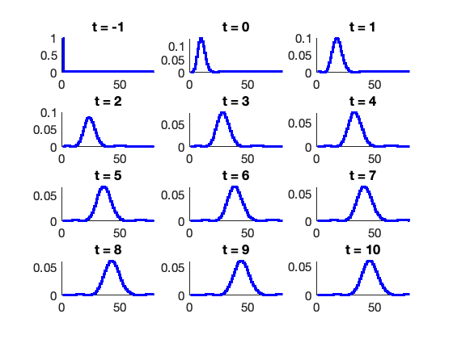

Contents
- (1) Creating and Modifying SSIT Model
- (1A) Choosing a Pre-Made Model
- (1B) Extending a model with additional reactions
- (2) Solving a Model
- (2A) Solve using FSP
- (2A.1) Solve FSP Model again using the bounds from the last solution
- (2A.2) Make plots of FSP solution
- (2B) Solve using SSA
- (2B.1) Make plots of SSA solution
- (3) Sensitivity Analysis using FSP
- (3A) Make plot of sensitivities
clear all close all
(1) Creating and Modifying SSIT Model
(1A) Choosing a Pre-Made Model
ModelChoice = 'BirthDeath'; % One species problem % ModelChoice = 'ToggleSwitch'; % Two species problem (non-linear toggle switch) % ModelChoice = 'CentralDogmaTV'; % Two species problem (mRNa and protein) with time varying transcription rate % ModelChoice = 'Repressilator'; % Three species problem % ModelChoice = 'BurstingSpatialCentralDogma'; % Four species problem (gene state, nuclear mRNa, cytoplasmic mRNA, and protein) F1 = SSIT(ModelChoice);
(1B) Extending a model with additional reactions
F3 = F1.addSpecies('protein'); F3 = F3.addParameter({'kpact',4;'gpact',1}); F3 = F3.addReaction('kpact*x1',[0;1]); F3 = F3.addReaction('gpact*protein',[0;-1]);
(2) Solving a Model
(2A) Solve using FSP
F1 = F1.formPropensitiesGeneral('BasicModel'); F1.tSpan = [-1:1:10]; F1.initialTime = -1; F1.solutionScheme = 'FSP'; % Set solutions scheme to FSP. [FSPsoln,F1.fspOptions.bounds] = F1.solve; % Solve the FSP analysis
(2A.1) Solve FSP Model again using the bounds from the last solution
If we start with the bounds computed in the first analysis, the solution is often much faster.
[FSPsoln] = F1.solve(FSPsoln.stateSpace); % Solve the FSP analysis
(2A.2) Make plots of FSP solution
F1.makePlot(FSPsoln,'meansAndDevs',[],[],1,{'linewidth',3,'color',[0,1,1]}) % Make plot of mean vs. time. F1.makePlot(FSPsoln,'marginals',[],[],2,{'linewidth',3,'color',[0,0,1]}) % Make plot of mean vs. time.
(2B) Solve using SSA
F2 = F1;
F2.solutionScheme = 'SSA';
SSASoln = F2.solve;
1200 SSA Runs Completed
(2B.1) Make plots of SSA solution
F2.makePlot(SSASoln,'trajectories',[],[],4) % Make some plots. F1.makePlot(FSPsoln,'meansAndDevs',[],[],4,... {'linewidth',4,'color',[0,1,1],'Marker','s','MarkerSize',20}) % Add FSP Solution to plot.
(3) Sensitivity Analysis using FSP
F4 = F1; F4.solutionScheme = 'fspSens'; % Set solutions scheme to FSP Sensitivity [sensSoln,bounds] = F4.solve(FSPsoln.stateSpace); % Solve the sensitivity problem
Error with Analytical Sensitivity Calculations - Switching to Finite Difference Method
(3A) Make plot of sensitivities
F4.makePlot(sensSoln,'marginals',[],[],4,{'linewidth',3,'color',[0,0,1]}) % Plot marginal sensitivities